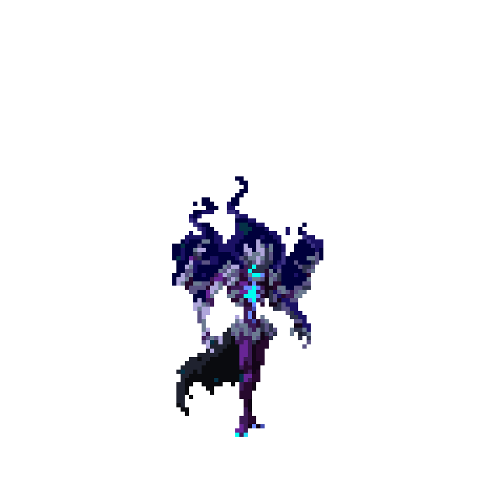
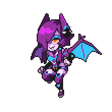
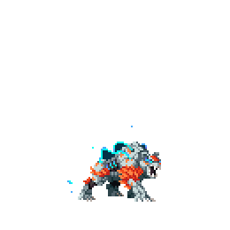
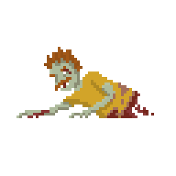
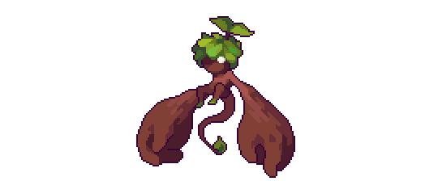
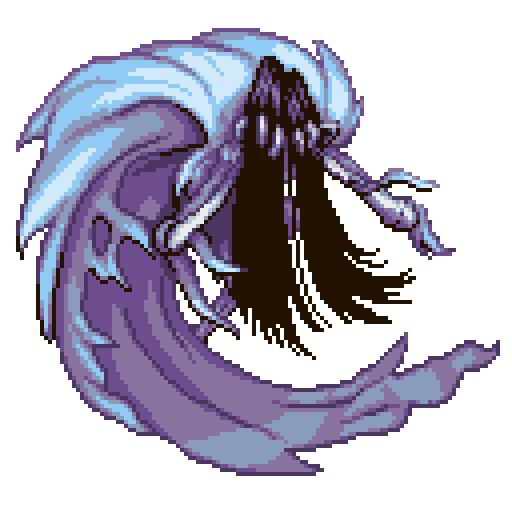

-
Lich #011
- superior
Vestido com vestes reais em farrapos. Seus ossos antigos emanam uma aura sombria, enquanto seus olhos vazios brilham com uma malícia ancestral. Comandando legiões de criaturas sombrias, ele governa com punho de ferro sobre seu reino de trevas.
-
Necrohíbrido #012

- mediano
Formada por corpos de zumbis putrefatos. Seus membros decompostos se retorcem em uma fusão macabra, enquanto seus olhos sem vida brilham com uma fome insaciável. Uma mistura horripilante de carne em decomposição, ela aterroriza com seus uivos dissonantes e garras necróticas.
-
Slime #013

- inferior
Com chifres emergindo de sua forma gelatinosa. Seu corpo brilhante e translúcido é salpicado de cores vibrantes, enquanto seus chifres curvos adicionam um toque misterioso. Com habilidades de transformação e uma natureza escorregadia, ele desafia as expectativas, revelando-se uma criatura surpreendentemente astuta.
-
Succubus #014
- mediano
A Succubus é uma sedutora demoníaca de beleza hipnotizante, com longos cabelos escuros e asas membranosas. Seus olhos penetrantes brilham com um desejo insaciável, enquanto sua pele exala um brilho sobrenatural. Com sua aura sedutora e habilidades de manipulação, ela envolve as almas incautas em sua teia de prazer e perdição.
-
Tortuga #015

- neutro
O Tortuga é um ser trágico, meio homem e meio tartaruga, em sua busca pela imortalidade. Seu casco gigantesco agora é sua fortaleza, protegendo-o de ameaças enquanto ele medita sobre a vida e a morte. Com sua sabedoria antiga e uma natureza contemplativa, ele pondera sobre o preço que pagou para alcançar sua imortalidade.
-
Voltiger #016
- mediano
É um tigre robô de metal reluzente, envolto em uma energia elétrica pulsante. Seus olhos brilham com uma intensidade elétrica, enquanto suas garras afiadas são carregadas de eletricidade estática. Com velocidade e agilidade surpreendentes, ele ataca seus adversários com descargas elétricas fulminantes.
-
Troll #017

- mediano
É uma criatura de aparência grotesca com pele cinzenta, músculos proeminentes e uma estatura imponente. Suas presas afiadas projetam-se de sua boca babando, e suas mãos enormes possuem garras pontiagudas. Com uma expressão maligna e uma força descomunal, ele ameaça tudo em seu caminho com seu temperamento violento.
-
Zumbi #018
- inferior
É um ser pálido e decrépito, com pele descolorida e putrefação evidente. Seus olhos vazios refletem a falta de vida, enquanto seus membros trêmulos movem-se de forma desajeitada e descoordenada. Em busca insaciável por carne humana, ele é um lembrete mórbido da fragilidade da existência.
-
Sylvan #019
- neutro
Seu corpo etéreo é entrelaçado com flores e folhas, emanando uma beleza radiante. Com olhos gentis e cabelos trançados com elementos naturais, ela protege e preserva a vida da floresta, sendo a personificação da conexão entre a natureza e o divino.
-
Spectral #020
- superior
Desprovido de carne e envolto em uma aura translúcida. Seus ossos brilham com uma luz fantasmagórica, revelando uma forma esquelética imaterial. Com movimentos fluidos e sinistros, ele exibe uma presença assombrosa, evocando um sentimento de mistério e uma ligação com o mundo além da vida.